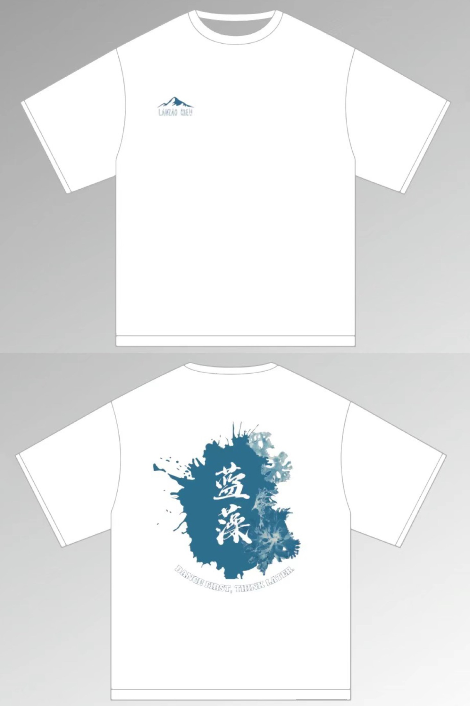
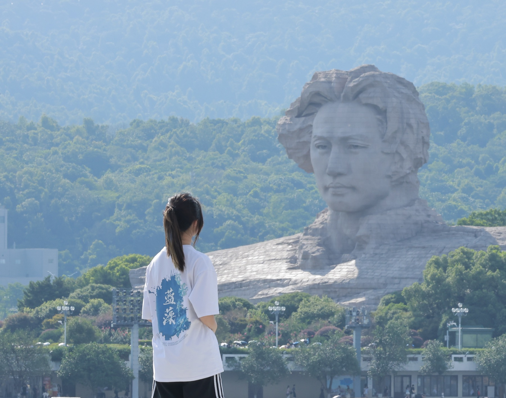
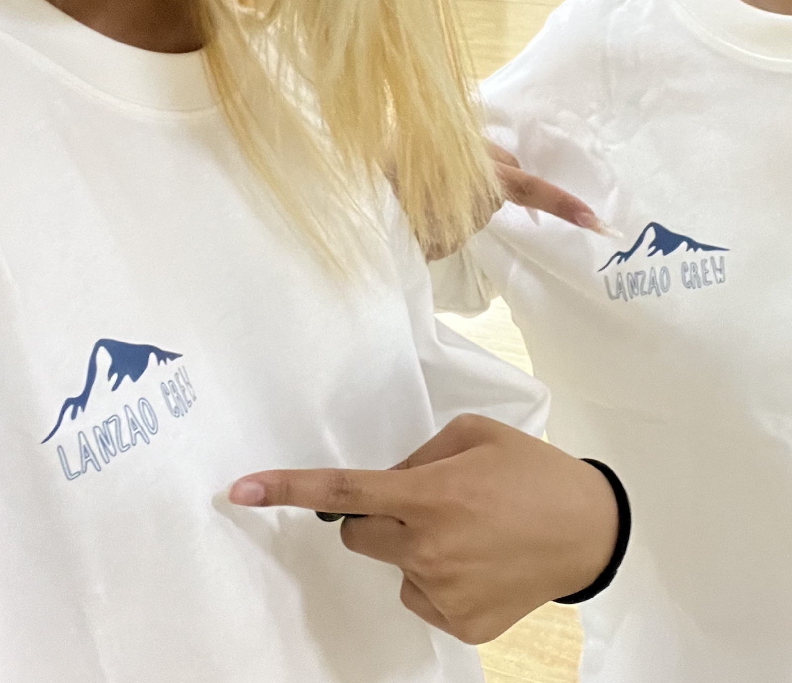
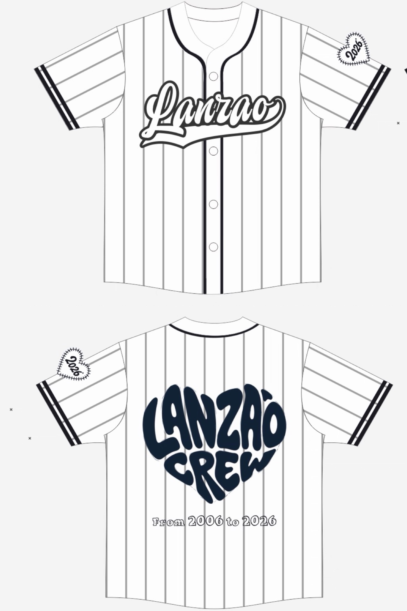
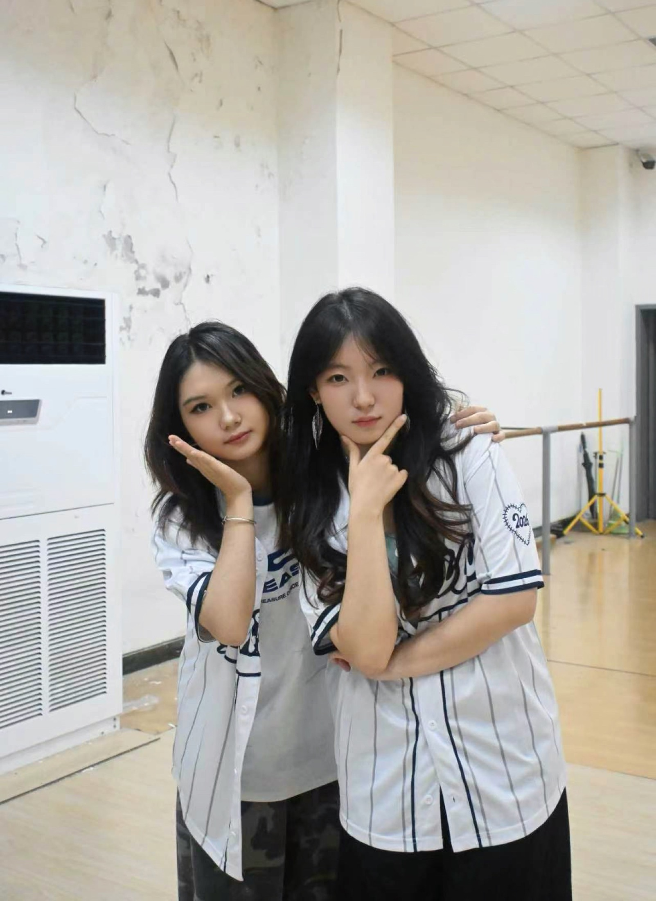

APPAREL ARCHIVE · 01
两代社服，
两次把社团气质穿在身上。
从第一版白色 T 恤，到第二版棒球衫，我不只画一张设计图，也关心它最后是否真的被成员穿上、被记住。
“藻”聚成“山”的白色 T 恤
正面的图形从下方看是“藻”，从整体轮廓看又像一座山：蓝藻的伙伴们凝聚在一起，就是如同山一般的力量。



纪念感更强的棒球衫
在参考棒球衫视觉语言的基础上，我重新组织黑白条纹、版型、“Lanzao Crew” 字样与二十周年标识，强化团队感和纪念属性。

